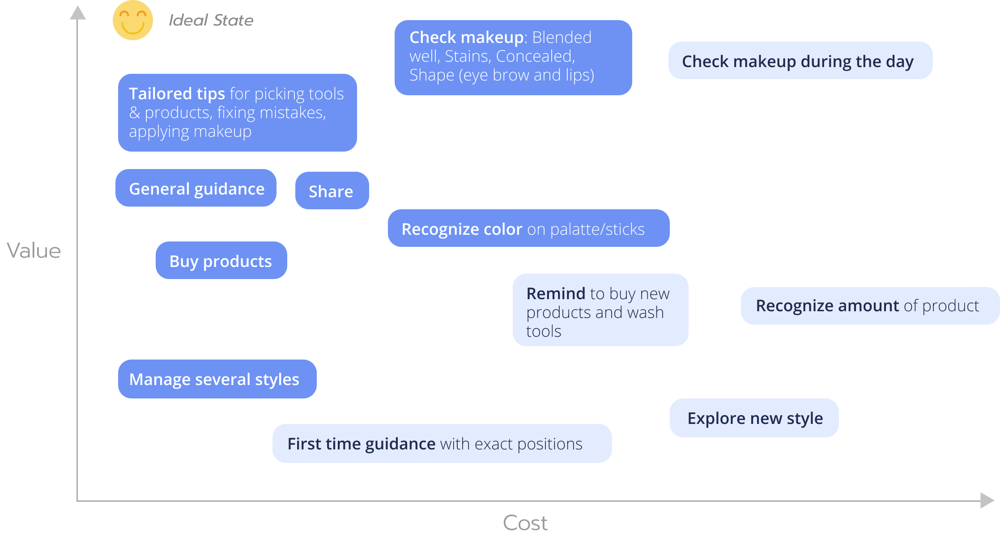
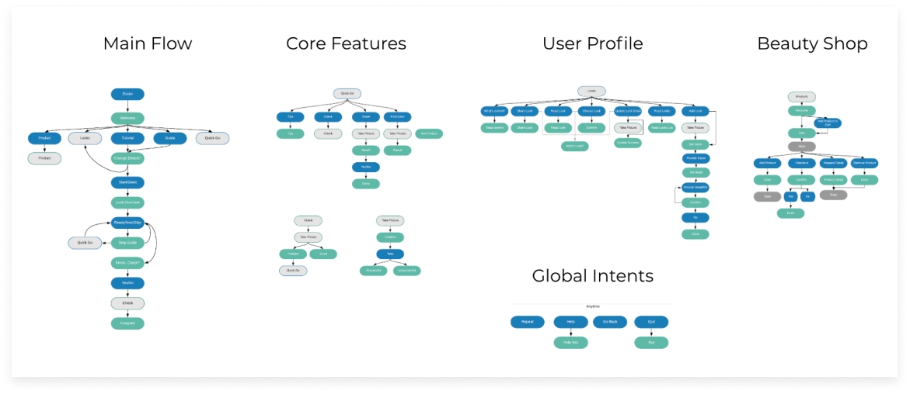

Competitor Analysis
12 Role-Plays
4 Contextual Interviews
2 / Ideate
Personas
Walking the wall
Technical Experimentss
More researchs
Dialogue Flows
4 / Test & Iterate
Wizard of Oz
Technical Prototyping
We researched on current technologies in makeup industry but sadly didn’t find any that designed for people visual impairments. Actually, all of the products we found don’t even support auditory feedback. We listed the main features of them in order to benchmark our future design.
Since video blog is a mainstream way to learn about makeup. We also researched on makeup videos on Youtube. We found many makeup tutorials made by blind people, but didn’t see any intended to teach blind people.
In order to better empathize with people with visual impairments and prepare for future user interview, we did role-play makeups, which means we put on makeup with eyes closed. Each of us did two role-plays, one by ourselves, one following a youtube tutorial.
We interviewed 3 individuals with different type of visual impairments (including blindness), and observed them doing their daily makeup routine or follow a tutorial if they usually don’t use makeup.
For ideation, we used “walking the wall” method. Design ideas were then plotted on a cost/value matrix.
For ideation, we used “walking the wall” method. Design ideas were then plotted on a cost/value matrix.
With no experience designing an Alexa skill, how can we quickly learn about the capabilities and limitations of this platform? I first looked into design guidelines and development documentaions, then I designed and built a simple Alexa skill. This helped me get to know the framework, useful resources, and best practices to design for it. I was also able to experiment the boundaries of its capabilities.
In order to provide proper tips, we looked through more than 100 makeup videos and articles. We organized them into 4 categories: "For first-time users", "How to apply", "How to fix", and "How to self-check".
Then we started prototyping the conversational UI. We started with whiteboard, markers and post-its. Then we digitized them as a flow of intents with Tortu and Lucid Chart. We broke down the flow into several parts and designed anchors to link them. After we had the flow, we wrote example utterances with slots for each intent.
We want to be polite, we want to be helpful, we want to guarantee discoverability of key features. However, these are not reasons for having too long responses. Through wizard of Oz testing, we made our responses more concise, and dialogue flow simpler. Below are tips we learned:
- CUI shouldn’t offer more than 2 options at a time.
- Customize response based on user need.
- Pause as an progressive disclosure.
- Reply “Let me know ...” rather than “Do you want ...?” to simplify the flow.
- Don’t ask, just do it.
See below some examples:

Building in Alexa and hearing the responses reveals more detailed problems due to the platform and technology.
- Skill name cannot contain “Echo” (our original name is “Echo Beauty”).
- Alexa’s tone is so limited and only 2 punctuations (“,” and “.”) are effective. So, “?”, “--”, “’” etc. needed to be replaced while remaining similar tones.
- Test with more users who have visual impairments to refine current design and scripts.
- Design a personality for the skill to make it more adorable and memorable.
- Identify and design for higher-level user needs like emotional need etc.
- Explore potential ways to incorporate/tackle more high-value-high-cost features.
- Expand target user group and design for the general crowd.